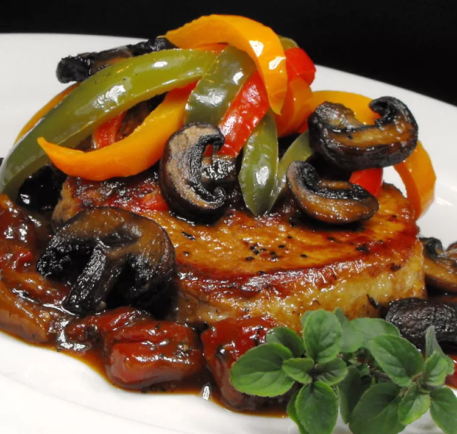

Pork Chops Italiano

This is a picture of the tasy zesty Pork Chops Italiano!
Tender pork chops, peppers, mushrooms, and tomatoes — this main dish is loaded with Italian flavor. Great served
over noodles.
Ingredients
- 1 teaspoon olive oil
- 2 cups sliced mushrooms
- 2 tablespoons olive oil
- 6 (3/4 inch thick) pork loin chops
- 1 cup chopped onion
- 2 cloves garlic, crushed
- 1 (14.5 ounce) can diced Italian tomatoes, undrained
- 1 teaspoon dried basil
- ½ teaspoon dried oregano
- ½ teaspoon salt
- ¼ teaspoon ground black pepper
- ½ cup water (Optional)
- 6 large green bell pepper slices
These are the steps!
Here's a very brief overviewof what you can expect when you make homepade porkchop italiano:
- Heat 1 teaspoon oil in a skillet over medium heat. Stir in mushrooms; cook and stir until tender, 5 to 7
minutes. Transfer to a bowl and set aside until needed
- Heat 2 tablespoons oil in the skillet over medium heat. Add pork chops and cook until browned, 3 1/2 to 5
minutes per side. Transfer to a plate. Drain all but 1 tablespoon drippings from the skillet.
- Add onion and garlic to the skillet; cook and stir until onion has softened and turned translucent, about 5
minutes. Stir in tomatoes, basil, oregano, salt, and pepper. Add pork chops and simmer until tender and no
longer pink in the center, about 45 minutes, adding water if mixture becomes too dry. An instant-read
thermometer inserted into the center of each pork chop should read at least 145 degrees F (63 degrees C).
- Place a bell pepper slice on top of each pork chop. Add reserved mushrooms and continue to simmer until
peppers
are tender, 5 to 10 minutes.
Do not add bell peppers until pork chops are done, or they will turn to mush.